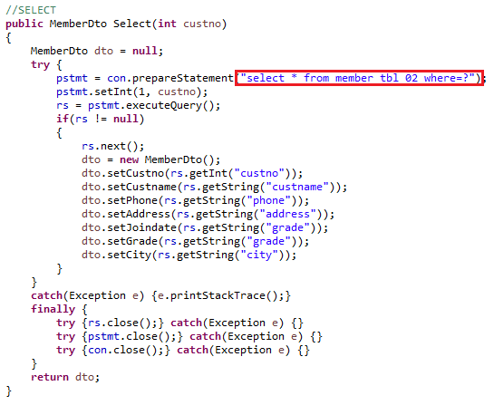
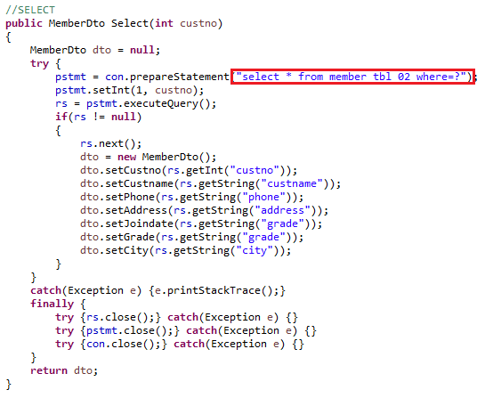
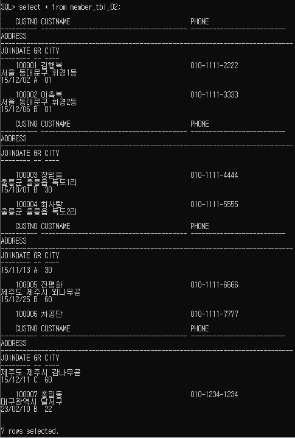
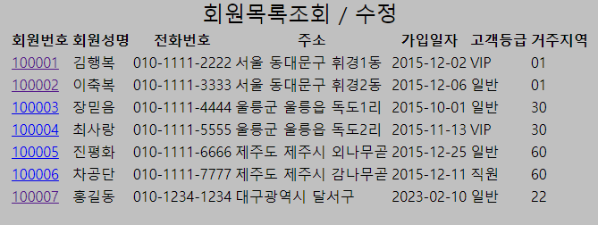

전체출력 Select All과 where절을 이용한 Select로 두개 만든다
Select All의 경우 여러 컬럼값을 받아와야해서 리스트형으로 만든다


1. 우선 DAO에서 Select 코드를 작성하자
전체출력 Select All과 where절을 이용한 Select로 두개 만든다
Select All의 경우 여러 컬럼값을 받아와야해서 리스트형으로 만든다

2. DAO 코드를 완성했다면 이제 jsp파일에 이것을 출력해야한다
info.jsp에 그것을 출력할 수 있도록 내용을 작성해준다

3. 서버를 실행시켜서 sql에서 불러온것과 똑같이 정상적으로 불러와지는지 확인하자

